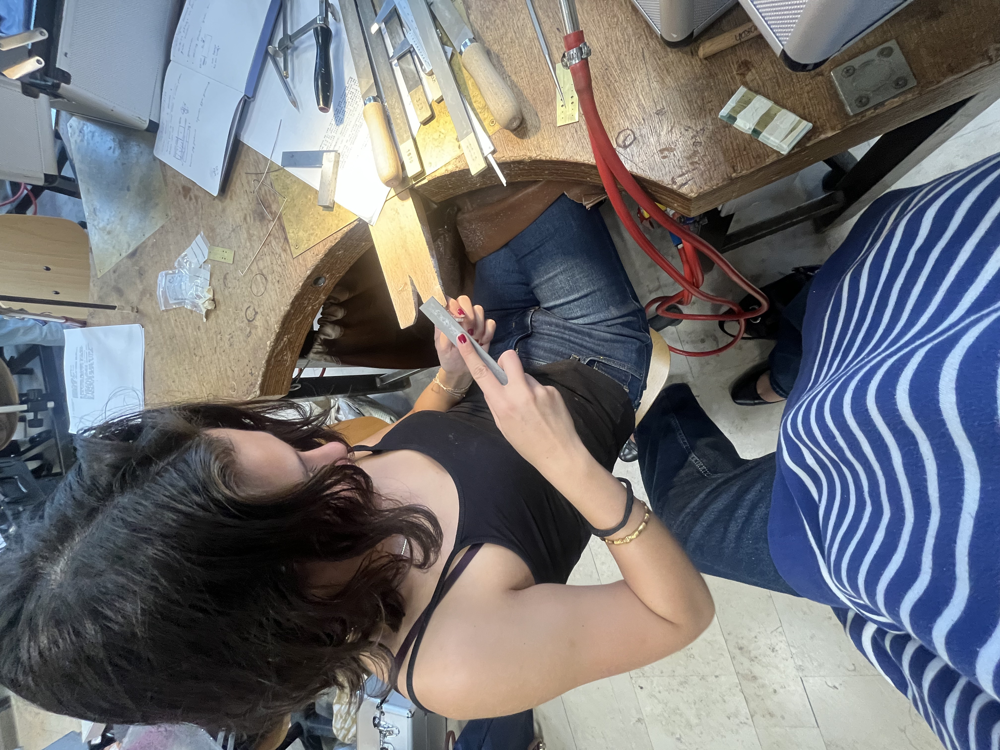
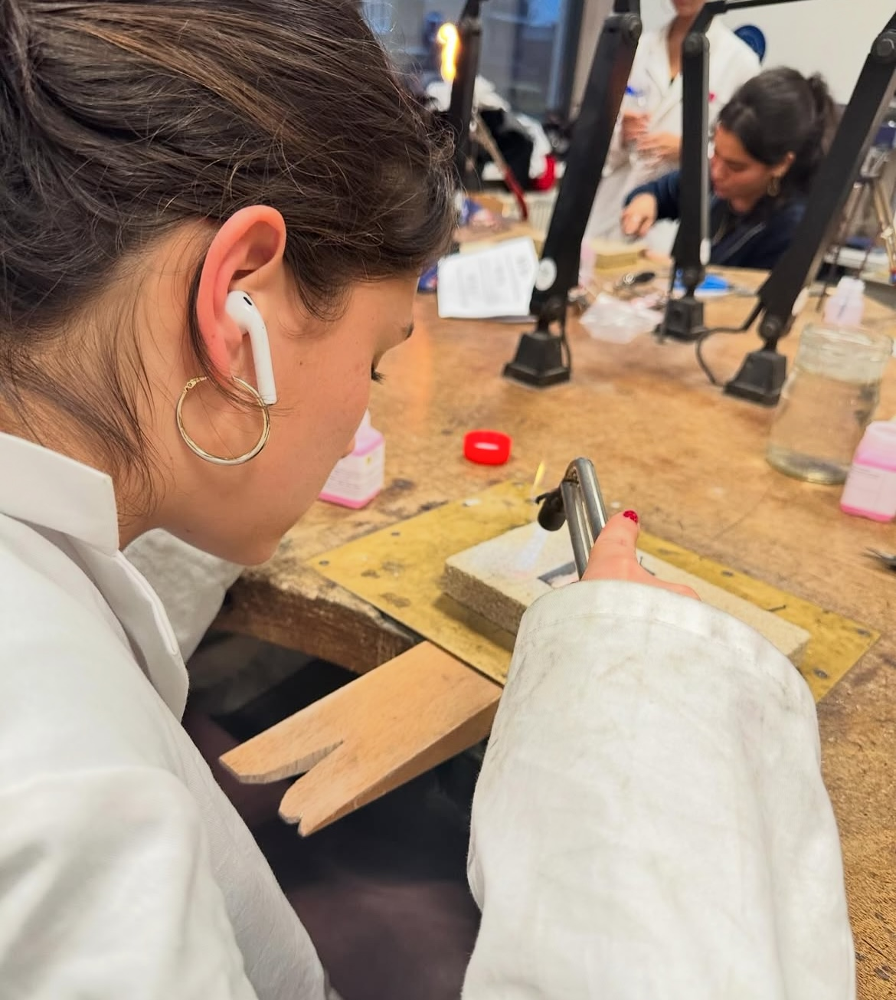

In het atelier
Van schets en CAD-ontwerp tot de werkbank — een kijkje in hoe een sieraad tot stand komt.
[PLACEHOLDER: beschrijving van je werkproces — van eerste schets of CAD-tekening tot het gietwerk, zetten en afwerken. Wat maakt jouw manier van werken kenmerkend?]


